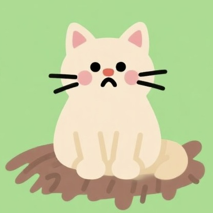

Based on feline neuroscience and behavioral research, we've identified 8 distinctive cat personality profiles. Discover your cat's type and receive tailored care recommendations.


Actively seeks human interaction, thrives in groups, highly adaptable

These cats frequently rub against humans, purr often, and proudly show off toys. They flourish in multi-person households and may develop separation anxiety when left alone.
High cortisol levels, extremely alert to sounds/smells, needs gradual introduction

With heightened sensitivity to environmental changes, these cats require a 3-day adjustment period for new items. Pheromone diffusers are recommended to help manage their careful nature.
Hunting instinct, most active at dawn/night, needs enrichment challenges

Showing peak activity between 3-5AM and at dusk with 40% higher activity levels, these cats thrive with multi-level hunting paths and electronic prey-simulating toys.
Weak HPA axis regulation, highly scheduled behaviors, resists change

These cats follow strict elimination and feeding schedules with remarkably consistent route choices. They struggle with sudden changes to food bowl locations or litter type.
Overactive amygdala, stress-induced behavioral issues, needs desensitization

With amygdala activity 2.3 standard deviations above average, these cats may develop psychogenic alopecia or excessive grooming. Treatment often combines SSRI medications with gradual desensitization training.
Needs 80+ m² territory, enhanced spatial memory, dislikes confinement

With hippocampal volume 15% larger than social cats, these independent explorers excel at spatial navigation. They thrive with roof observation areas or enclosed sun rooms.
Low metabolic rate, 18+ hour sleep needs, reduced catnip response

With metabolic rates 18-22% below average, these relaxed cats sleep up to 18 hours daily and show minimal reaction to catnip. Regular BMI monitoring is essential to prevent obesity-related conditions.
Approach-avoidance conflict, mixed social signals, benefits from GABA support

Experiencing approach-avoidance conflicts lasting over 72 hours, these cats often want to approach strangers but fear contact. GABA supplements can help reduce decision stress.
Our scientific framework integrates neurobehavioral research with practical observation to deliver accurate personality profiles.